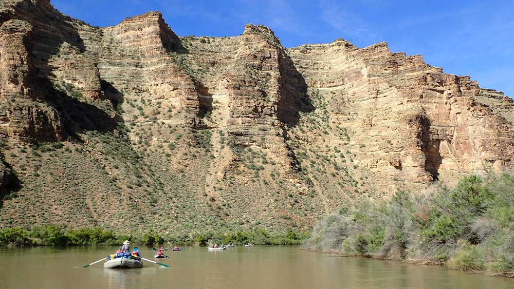

Ours Rivers
Green River Desolation Canyon, Utah
They DO call it Desolation Canyon for nothing. This stretch of the Green River is the most remote and inaccessible canyon that we raft through. But it is hardly empty. There are Native American petroglyphs, abandoned old-west homesteads, and the ghosts of Butch Cassidy and his Hole-In-The-Wall gang who hid out in the canyon’s intricate landscape.

Green River Lodore Canyon, Utah
The Green River is not only green, it is olive and moss and ochre and crimson and terra cotta and cinnamon and chestnut and aqua and azure. It is Sage Creek and Red Wash and Rainbow Park. It is red cedars, yellow marmots, and blue herons. It is a veritable Sherwin-Williams catalog of indescribable beauty.